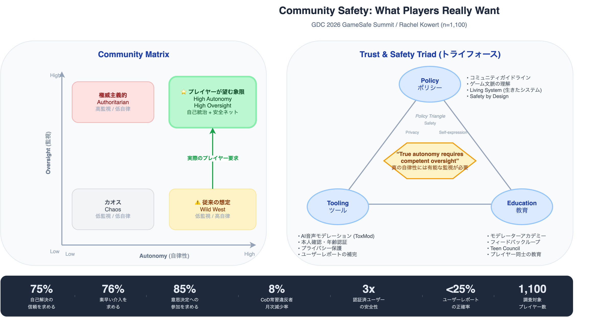
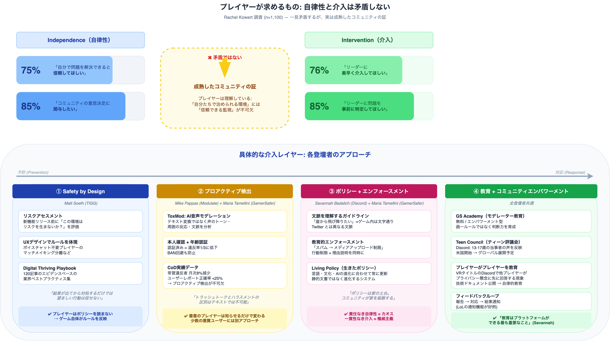

GDC 2026: プレイヤーが本当に求めるコミュニティ安全とは
「プレイヤーは自由を望んでいる。だから監視は最小限にすべきだ」――オンラインゲームのコミュニティ運営で、この前提は長く信じられてきました。しかし、1,100人のプレイヤーを対象にした調査が、この常識を根底から覆しました。75%が「自分で問題を解決できると信頼してほしい」と答える一方で、76%が「リーダーに素早く介入してほしい」と答えたのです。
GDC 2026 の GameSafe Summit で開催されたパネルセッション「From Independence to Intervention」では、Discord、Modulate、GamerSafer、TIGG という4つの異なるレイヤーの専門家が集結し、この一見矛盾する要求の本質を解き明かしました。Call of Duty での常習違反者 月次8%減少、認証済みユーザーの違反率が未認証の3分の1、ユーザーレポートの正確率が25%以下――具体的なデータとともに提示されたフレームワークは、コミュニティセーフティ（Community Safety＝オンラインコミュニティにおける安全性の確保と有害行為の防止）を設計するための実践的な指針になります。
本記事では、現地で録音したセッション全編のトランスクリプトをもとに、登壇者の発言を忠実に再構成しました。ポリシー・ツール・教育の3つの柱に沿って、彼らが語った具体的なエピソード、数値、そして哲学を日本語で詳しくお届けします。
日本の読者へ: 欧米のゲーム業界では、オンラインハラスメント対策が法規制と結びつく形で急速に進んでいます。米国の COPPA（Children’s Online Privacy Protection Act＝児童オンラインプライバシー保護法）や EU の DSA（Digital Services Act＝デジタルサービス法）など、プラットフォーム事業者に安全対策を義務付ける法律が相次いで施行されています。日本ではまだ総務省の研究会等で議論が進む段階ですが、グローバル展開を視野に入れる開発者にとって、本セッションの知見は今後必須の前提知識です。
セッション概要
| 項目 | 内容 |
|---|---|
| セッション名 | From Independence to Intervention: What Players Really Want from Community Safety |
| 日時 | 2026年3月9日（月） 12:45pm - 1:45pm |
| 場所 | Room 2009, West Hall |
| 形式 | Partner Developer Summit（GameSafe Summit＝ゲームの安全性をテーマにした企業パートナー向けサミット） |
| トラック | Educators |
| 対象レベル | Entry-Level（入門者向け） |
登壇者: 4つの異なるレイヤーの専門家
セッションの冒頭、モデレーターの Rachel Kowert 博士は自身をこう紹介しました。
“I am Dr. Rachel Kowert. I’m a research psychologist. I’ve been studying the uses and effects of games for 15 years. I’m working as a product and policy advisor in the industry. I’m also a visiting researcher at the University of Cambridge in the UK. And I’m the research director of Games for Change.”
（私は Rachel Kowert 博士です。研究心理学者として15年間ゲームの利用と影響を研究してきました。業界ではプロダクト・ポリシーアドバイザーとしても活動しており、英国ケンブリッジ大学の客員研究員でもあります。そして Games for Change のリサーチディレクターです。）
そして間髪を入れず、「でもこのステージで一番面白くない人間は私です（But I am the least interesting person on this stage）」と笑いを取りながら、4人のパネリストを紹介しました。
| 登壇者 | 所属 | 役割 | 専門領域 |
|---|---|---|---|
| Rachel Kowert, PhD | University of Cambridge / Games for Change | モデレーター | 学術研究・心理学 |
| Mike Pappas | Modulate（CEO/共同創業者） | パネリスト | AI音声モデレーション |
| Savannah Badalich | Discord（グローバル プロダクトポリシー責任者） | パネリスト | プラットフォームポリシー |
| Maria Tamellini | GamerSafer（COO/共同創業者） | パネリスト | 本人確認・年齢認証 |
| Matthew Soeth | TIGG（エグゼクティブディレクター） | パネリスト | Safety by Design |
各登壇者の自己紹介から見える専門性
Maria Tamellini（GamerSafer）は、自社の立場をこう説明しました。
“We’re a safety company supporting games with different safety solutions, including player authentication and verification. We also own MineHut, which is the largest Minecraft […] server network in the world. So we have the tool and the ecosystem itself, which is a very unique position to be part of this discussion.”
（私たちはプレイヤー認証を含む様々な安全ソリューションでゲームを支援する会社です。また、世界最大の Minecraft サーバーネットワークである MineHut も運営しています。ツールとエコシステムの両方を持っているのは、この議論に参加する上で非常にユニークなポジションです。）
ツール提供者であると同時に、自らコミュニティを運営しているという二重の立場。これが後のセッションで、理論と実践の両面から発言する説得力につながっています。
Mike Pappas（Modulate）は、自社の技術的アプローチの核心を端的に述べました。
“Our focus on Modulate is in actually understanding speech and the meaning of it. There’s so much more in the way we communicate with each other than what’s just in the transcript. So we’re really focused on voice native understanding to make sure that we can tell the difference between things like friendly trash talk and harassment.”
（Modulate の焦点は、音声とその意味を実際に理解することにあります。私たちのコミュニケーションには、トランスクリプト（書き起こし）に含まれる以上のものがある。フレンドリーなトラッシュトーク（軽口）とハラスメントの違いを見分けられるよう、音声ネイティブな理解に注力しています。）
この「voice native understanding（音声ネイティブな理解）」という表現は、テキスト変換ではなく音声そのものを分析するという Modulate のアプローチを象徴するキーワードです。
Savannah Badalich（Discord）は、プラットフォームの性質を明確にしました。
“We are the social layer for gaming and so it’s really cool to be here to talk about the ways in which we try to leverage safety, tooling, policy, education, rehabilitation, to try to make this place where everyone can trust themselves, have fun, play games with their friends.”
（私たちはゲームのソーシャルレイヤーです。安全性、ツール、ポリシー、教育、リハビリテーションを活用して、誰もが信頼できる場所で友達とゲームを楽しめる空間を作る取り組みについて話せるのは素晴らしいことです。）
Matthew Soeth（TIGG）は、自組織の成果物に言及しました。
“We published the Digital Thriving Playbook a little over a year ago, which is 120 articles around design on safety […] looking at multiplayer environments, anything where there is social interaction or design elements that can impact player behavior.”
（1年ちょっと前に Digital Thriving Playbook を公開しました。120の記事で構成された、安全設計に関するプレイブックです。マルチプレイヤー環境や、プレイヤーの行動に影響を与える社会的インタラクションやデザイン要素を扱っています。）
補足: TIGG の Digital Thriving Playbook は digitalthrivingplaybook.org で無料公開されています。ゲームの安全設計に関するエビデンスベースのベストプラクティス集で、インディー開発者にも活用できる実践的な内容です。
核心的発見: Community Matrix — 「矛盾」ではなく「成熟」
Kowert 博士の調査が覆した常識
セッションの最初の10分間は、Kowert 博士が単独で調査結果を解説する時間でした。彼女は前年に発表した2本の調査報告書に基づいて話しました。
“Last year, I conducted and published two research reports. The first one was a player’s expectation survey. I asked players, what is it that you want in your gaming communities when it comes to trust and safety? What are you expecting from your digital leaders in this space? The second piece was a needs assessment for digital leaders. So how do your leaders see themselves as being able to meet those expectations?”
（昨年、2本の調査レポートを実施・公表しました。1本目はプレイヤーの期待に関するサーベイです。プレイヤーに「Trust and Safety に関して、ゲーミングコミュニティに何を求めているか？デジタルリーダーに何を期待しているか？」と聞きました。2本目はデジタルリーダー向けの「ニーズ・アセスメント」で、リーダー側がそれらの期待にどう応えられると認識しているかを調べました。）
そして Community Matrix（コミュニティ・マトリクス）を提示します。
“This is the community matrix and you can see the axes are low and high oversight and low and high autonomy and they can fit into one of those four buckets.”
（これがコミュニティ・マトリクスです。軸は「低/高の監視」と「低/高の自律性」で、プレイヤーは4つの象限のいずれかに分類されます。）
従来の想定: 「Wild West」
“There has long been an assumption that players, particularly gamers, want high autonomy and want to be free and they want low oversight. They don’t want people telling them what to do. This is probably one reason why reactive moderation was one of the first safety tools and approaches we took as a gaming industry.”
（長い間、プレイヤー、特にゲーマーは高い自律性を望み、自由でありたい、監視は低い方がいいという前提がありました。誰にも指図されたくない、と。これがおそらく、リアクティブモデレーション（事後対応型の管理）がゲーム業界で最初のセーフティツール・アプローチとして採用された理由の一つです。）
「リアクティブモデレーション」とは、問題が発生してからユーザーの通報を受けて対処する方式です。日本のオンラインゲームでおなじみの「通報ボタン」→「GM対応」という流れがまさにこれにあたります。
1,100人の調査結果: 高自律性 x 高監視
“But I couldn’t find any research that actually asked them what is it that they want. So we looked at 1,100 players who were all in the US and I essentially showed them this matrix and asked them to place a position around it. And it turns out they don’t actually want a hands-off community. They want a guided community with high autonomy and high oversight.”
（しかし、実際にプレイヤーに「何を望んでいるか」を聞いた研究は見つかりませんでした。そこで米国在住の1,100人のプレイヤーにこのマトリクスを見せて、自分の位置を選んでもらいました。結果は、プレイヤーは手放し（hands-off）のコミュニティを望んでいないということでした。彼らが望むのは、高い自律性と高い監視を持つ「導かれたコミュニティ（guided community）」です。）

一見矛盾する4つの数値
| 自律性（Independence） | 介入（Intervention） |
|---|---|
| 75% 自分で問題を解決できると信頼してほしい | 76% リーダーに素早く介入してほしい |
| 85% コミュニティの意思決定に関与したい | 85% リーダーに問題を事前に特定してほしい |
Kowert 博士自身も、最初はこの結果に戸惑ったと率直に語りました。
“So when I first read this, I was like, this does seem a little contradictory. But when I started to think about it, I think it’s actually a sophistication of the evolution of these communities. They realize that true autonomy requires competent oversight as a safety net. So they want communities where they can self-govern knowing that that help is available if and when they need it.”
（最初にこれを読んだとき、「確かに少し矛盾しているように見える」と思いました。でも考えてみると、これは実はコミュニティの進化における成熟なんです。プレイヤーは、真の自律性には有能な監視がセーフティネットとして必要だと理解しています。つまり、助けが必要な時にすぐ手に入ると分かっている状態で、自己統治できるコミュニティを望んでいるのです。）
「真の自律性には有能な監視が必要（True autonomy requires competent oversight）」 ――これがセッション全体を貫く核心テーゼです。これは矛盾ではなく、コミュニティの「成熟度」を示す指標だという解釈です。
Trust and Safety Triforce: ゼルダの「トライフォース」に例えて
Kowert 博士は解決策のフレームワークを、ゲーマーの聴衆に向けてゼルダの伝説のトライフォースに例えて紹介しました。
“Now for me, when I think of solutions, high versus one, I mean, come on. My Zelda people here. This is the trust and safety triforce, which represents the three tools we have in our tool box to support our players. Policy, education, and tooling.”
（解決策を考えると、3つが互いに等しく重要……って、もう分かりますよね。ゼルダファンの皆さん。これが Trust and Safety のトライフォースです。プレイヤーを支えるための3つのツール――ポリシー、教育、そしてツーリングを表しています。）
会場からは笑いが起き、「力・勇気・知恵（power, courage, and wisdom）」とのアナロジーに頷く聴衆の姿がありました。
“It’s also based off of the policy triangle. If you’re familiar with the policy triangle, which is safety, privacy, self-expression, there’s usually a push and a pull. So if you have more safety, maybe you have less privacy […] But when it comes to a triforce, all three are equal.”
（これはポリシー・トライアングル（Safety / Privacy / Self-expression）にも基づいています。通常、安全性を高めるとプライバシーが減る、というトレードオフがある。しかしトライフォースでは、3つ全てが等しい重要性を持ちます。）
第1の柱: Policy（ポリシー）
Savannah Badalich（Discord）: 「家の土台」としてのコミュニティガイドライン
Kowert 博士が最初に Savannah に投げかけた質問は、「75%のプレイヤーが自己解決の信頼を求めている中、どのように自律の余地を残しつつエスカレーションパスを確保するポリシーを構築しているのか」でした。
Savannah はまず Discord の独自性を説明しました。
“As a reminder, Discord is not a big social media feed platform. We are a chat app. Really there for your conversations. There are servers that can get very, very big and they help build that community. But for the most part, we’re thinking about building out policies for Discord itself. We’re thinking about our community guidelines. How do we set norms and behaviors that we expect across the platform? What is that sort of, I wouldn’t even call it the ground level. I would call it the basement. What we would expect when it comes to safety.”
（念のため言うと、Discord は大きなソーシャルメディアのフィード型プラットフォームではありません。チャットアプリです。コミュニティガイドラインをどう設計するか――プラットフォーム全体で期待する規範と行動をどう設定するか。それは「地上階（ground level）」ですらなく、「地下室（basement）」と呼ぶべきものです。安全に関しての最低限の期待値です。）
この「地下室」という比喩は印象的です。Discord はプラットフォーム全体のルール（コミュニティガイドライン）を「家の土台」として提供し、その上にコミュニティが自分たちの空間を作る、という設計思想です。
“I would say we provide the overall framework, but if you would like the basement or the foundation of the house, you will get to actually decorate the house, decide if you want dogs inside the house, decide if you want to have conversations that don’t relate to [gaming].”
（全体的なフレームワークは私たちが提供します。でも「地下室」すなわち「家の土台」を提供したら、あとは家を飾るのはあなた方です。犬を家の中に入れるかどうか、ゲーム以外の会話をするかどうか、それは全てあなたが決めることです。）
ここで会場から「犬は家の中に入れたい」という声が上がり、笑いが起きました。GDC らしいカジュアルなやり取りです。
ゲーム文脈の理解が不可欠
Savannah はゲーム特有の文脈理解の重要性を、具体例で示しました。
“There are certain phrases that you might say randomly in a game that you may not randomly say on a Twitter feed. You might also want to jump off a cliff because literally you’re out of your stuff.”
（ゲームの中でカジュアルに言うフレーズで、Twitter のフィードでは絶対に言わないものがあります。「崖から飛び降りたい」と言うかもしれません――文字通り、自分の持ち物がなくなったからです。）
「I want to jump off a cliff（崖から飛び降りたい）」がゲームのコンテキストでは文字通りの意味であるのに対し、SNS では自殺示唆として検知される可能性がある。この例は、ポリシーが文脈を無視して一律適用されることの危険性を端的に示しています。
ポリシーだけでは不十分
“Policies can help set norms, can help create what is sort of the bedrock of what community or institution should be doing, but without tools that you give to even just volunteer community moderators, there’s very little.”
（ポリシーは規範を設定し、コミュニティのあるべき姿の基盤を作ることはできます。しかし、ボランティアのコミュニティモデレーターにツールを渡さなければ、ほとんど何もできません。）
Maria Tamellini（GamerSafer）: 責任なき自律性はカオスを生む
Maria は、GamerSafer が運営する Minecraft サーバーネットワーク MineHut の経験をもとに語りました。
“For us, autonomy and intervention go hand in hand. […] Safety and fun are design principles that go from gameplay to policy. So these are important things in every piece of the player journey. As soon as a player joins our lobby or our in-game experience, our Discord, we want that to immediately recognize those principles, safety and fun.”
（私たちにとって、自律性と介入は表裏一体です。安全性と楽しさは、ゲームプレイからポリシーまで貫くデザイン原則です。プレイヤージャーニーの全ての段階で重要です。プレイヤーがロビーやゲーム内体験、Discord に参加した瞬間から、安全性と楽しさという原則を直ちに認識してもらいたい。）
そして核心的なフレームワークを提示しました。
“We notice that autonomy without responsibility creates chaos. And intervention without consistency appears authoritarian, especially with a young audience.”
（責任なき自律性はカオスを生む。そして一貫性なき介入は権威主義に見える。特に若い層にとっては。）
「責任なき自律性はカオスを生み、一貫性なき介入は権威主義に見える」 ――この対句は、セッション全体の中でも最も引用に値するフレーズの一つです。
自己表現とヘイトスピーチの境界線
“We want them to express themselves as much as they can, but that can become hate speech. We want them to make connections, collaboration, but that can become harassment or grooming.”
（できる限り自己表現してほしい。しかしそれはヘイトスピーチに変わり得る。つながりやコラボレーションを持ってほしい。しかしそれはハラスメントやグルーミング（性的搾取を目的とした信頼関係の構築）に変わり得る。）
Maria はさらに、13歳からプレイヤーが参加するコミュニティで「一緒に成長する」設計の重要性を強調しました。
“These players are joining us as young as 13 and we want them to grow older with us. So the way we enforce these values, these principles through these policies will create trust in the system and in our teams.”
（プレイヤーは13歳の若さで参加します。私たちは彼らと一緒に成長していきたい。だから、価値観や原則をポリシーを通じてどのように実施するかが、システムとチームへの信頼を築くのです。）
ポリシーは「生きたシステム」
“We see policy as a living system, not something static. It needs to improve with language, culture, how we implement AI. We’re all discussing how AI fits in our policies and this is already reflecting player interaction.”
（ポリシーは静的なものではなく、生きたシステムだと考えています。言語、文化、AIの実装方法とともに改善していく必要があります。AIがポリシーにどう組み込まれるべきか、今まさに議論しており、それはすでにプレイヤーのインタラクションに反映されています。）
Matthew Soeth（TIGG）: プレイヤーはポリシーを読まない
Matthew は、ポリシーの存在自体がプレイヤーにとって魅力的でないという現実を率直に認めました。
“If you’ve written policy, players are not going to […] I don’t know if anyone has had this, like you’re writing your policy, it’s not like the entire world is going to see the new policy and [say] ‘my favorite game updated its policy, this is the greatest experience ever, like I just love policy.’ You don’t get that sort of sense of feeling from it.”
（ポリシーを書いても、プレイヤーが読むことはない。誰か経験したことありますか？ポリシーを書いて、世界中の人が「大好きなゲームがポリシーを更新した！最高の体験だ！ポリシー大好き！」って言うなんてこと。そんな反応はありません。）
会場は笑いに包まれました。しかし Matthew はすぐに本質的な指摘を続けます。
“But when it’s done well, really what we’re looking at is, what is the policy saying, how’s it working between the guidelines, how’s it enforcing the systems? And so if it’s done well, it really feels integrated rather than imposed.”
（でもうまくできていれば、ポリシーが何を言っていて、ガイドラインの間でどう機能していて、システムをどう実施しているかが自然に伝わります。うまくできたポリシーは「統合されている」と感じられ、「押しつけられている」とは感じません。）
Safety by Design vs. Safety by Discovery
“We talk a lot in the Digital Thriving Playbook about safety by design versus safety by discovery. And so safety by design is we do our risk assessment, we look at the UX, we talk about what type of behavior is this experience fostering within the game itself.”
（Digital Thriving Playbook では、Safety by Design（設計段階からの安全性）と Safety by Discovery（発見による安全性＝問題が起きてから対処すること）の違いについて多く語っています。Safety by Design では、リスクアセスメントを行い、UXを検討し、この体験がゲーム内でどんな行動を育てるかを考えます。）
そして端的にこう言い切りました。
“Safety should never come at the cost of players’ experience. […] Games should be fun. If you share this on social media, that is the quote.”
（安全性はプレイヤー体験を犠牲にしてはならない。ゲームは楽しいものであるべきだ。もしこのセッションの内容をSNSでシェアするなら、これが引用すべき言葉です。）
第2の柱: Tooling（ツール）
ここからセッションはツールの議論に移りますが、Kowert 博士が指摘したように「ポリシーの話をしていたらツールの話なしには進めない」というのが現実です。
Mike Pappas（Modulate）: テキスト変換では「声」は理解できない
Kowert 博士が引用したデータは印象的でした。
“In a recent research collaboration, you showed that repeat offenders in Call of Duty decrease month over month by 8% when your voice moderation tools are implemented.”
（最近の共同研究で、Modulate の音声モデレーションツールを導入した結果、Call of Duty の常習違反者が月次で8%ずつ減少したことを示しましたね。）
Mike はまず「一番驚いたこと」として笑えるエピソードを話しました。
“What surprised me the most — the funny answer — is how many people said, ‘Oh, I see that Call of Duty has implemented this voice moderation system. You know what I should do? I should call it by name in-game and then start shouting as many slurs as possible. Let’s really test this thing out and see what happens.’ A surprising number of people just kind of self-reported in those first few days.”
（一番驚いたのは――面白い方の答えですが――「Call of Duty が音声モデレーションを入れたのか。じゃあ名前を呼びながらスラー（差別語）を叫びまくってテストしてみよう」と言った人の多さです。最初の数日間、驚くほどの人数が自発的にテストしてくれました。）
会場は大きな笑いに包まれました。しかし Mike はすぐに本質的な議論に移ります。
「どう言ったか」が全てを変える
“A lot of folks that were trying to just use transcription to determine, is this voice content problematic or not? An example of a transcription that you might read would be something like, ‘hey, hey, come to my private room.’ That transcription alone looks fine. And then you would hear it vocalized. And I’m not going to do that. But you all can probably imagine a way you could vocalize that. That would feel a whole lot creepier.”
（多くの人がテキスト変換だけで音声コンテンツが問題かどうかを判断しようとしていました。例えば「ねえ、プライベートルームにおいでよ」というトランスクリプション。テキストだけなら問題なく見える。でもそれを音声で聞いたら……ここではやりませんが、想像してみてください。ずっと不気味に聞こえるでしょう。）
周囲の反応から「害」を検知する
これは Modulate の技術の最も革新的な部分です。Mike は、発言そのものだけでなく、周囲のリアクションを分析することで害を検知できると説明しました。
“What we can do in voice that’s much harder to do in text is someone made a joke that, you know, it’s a little bit off color. Maybe it’s fine. It depends on how all these people react to that. Did everyone just go into a shocked silence? Is someone starting to shout and get a rage tone? Did someone just stop talking for a while? And they don’t feel safe participating anymore? We can notice that because they’re engaging a little less. Or is everyone laughing and responding in kind and having a great response?”
（テキストでは難しいが音声でできることがあります。誰かが少しきわどいジョークを言ったとします。問題かどうかは、周囲のリアクション次第です。全員がショックで沈黙した？ 誰かが怒鳴り始めた？ 誰かがしばらく黙ってしまった？――もう安全だと感じられず参加できなくなっているのを、発話の減少から検知できます。逆に、全員が笑って同じノリで返しているなら？ 問題ありません。）
| 周囲のリアクション | 解釈 |
|---|---|
| 全員がショックで沈黙 | 不快に感じている |
| 誰かがしばらく黙る | 安全でないと感じ参加をやめた |
| 誰かがログアウト | 危険を感じて離脱した |
| 全員が笑っている | 問題なし |
毒性の大半は「悪い人」から来るのではない
Mike はセッションの中で最も重要な知見の一つを共有しました。
“The majority of the toxicity that you see online is not coming from targeted malicious offenders. It’s coming from […] someone had a bad day, someone was confused, there was a culture clash you didn’t know how to navigate. It’s not bad people. There’s a small number of bad people who have outsized negative effects and there’s different ways you have to deal with them. But there’s a lot of toxicity that comes from genuinely well-meaning people.”
（オンラインで見られる毒性の大半は、狙いを定めた悪意ある常習者から来ているのではありません。誰かがその日調子が悪かった、混乱していた、文化的な衝突をうまく処理できなかった。悪い人ではないのです。少数の悪質な人間が不釣り合いに大きな悪影響を与えていて、それには別の対処法が必要です。でも毒性の多くは、本当に善意の人々から来ています。）
そして、意外なアナロジーで説明しました。
“When they have a better understanding of [that] the game is taking its policies seriously […] it’s similar to that little sign in the bathroom saying, ‘remember to wash your hands.’ It shouldn’t need to be there. But it does have a really profound effect.”
（ゲームがポリシーを本気で実行していると理解すると……トイレの「手を洗いましょう」という小さな看板に似ています。本来なくていいはずのものです。でも本当に大きな効果がある。）
善意の人々には「存在を知らせるだけで行動が変わる」というのは、コミュニティ安全設計における重要なインサイトです。
ユーザーレポートの限界: 正確率25%以下
“In our Call of Duty research we found that less than a quarter of user submitted reports end up being actionable. Many of them are just missing the data, many of them are not right. […] Many of them are someone just beating me in a match so I’m going to report them to try and punish them for it. There’s all kinds of fake user reports.”
（Call of Duty の研究で、ユーザーが送信したレポートのうち、対応可能なものは4分の1未満だと分かりました。データが不足しているもの、間違っているもの、そして「試合で負けたから報復で通報する」といったものが大量にあります。あらゆる種類の偽レポートがあるのです。）
そして、このデータの公開自体が会話を変えたと語りました。
“Putting that data out there […] seriously changed the conversation because prior to that […] we heard a lot of people in the media say, ‘Can’t you just use user reports? Isn’t that just strictly better? Why are you going through all this [effort]?’ And being able to actually say, ‘Hey, we tried that and here’s what we found.’ […] We’re now catching six times more bad guys than we’d ever been able to do before, and we’re seeing user retention go up by 20 percent.”
（そのデータを公開したことで会話が大きく変わりました。それまでメディアでは「ユーザーレポートだけでいいじゃないか？ そっちの方がいいのでは？ なぜそんな手間をかけるの？」という声が多かった。「実際にやってみた結果がこれです」と言えることで、「以前の6倍の悪質ユーザーを捕捉でき、ユーザーの継続率が20%上昇している」と示せたのです。）
Maria Tamellini（GamerSafer）: 認証済みユーザーは違反率が3分の1
Kowert 博士が紹介した GamerSafer のデータは明確でした。
“Verified users are three times less likely to be banned than non-verified users.”
（認証済みユーザーは、未認証ユーザーに比べてBAN（アカウント停止）される確率が3分の1です。）
Maria はこの結果をこう解説しました。
“The fact that verified players are less likely to be banned and more or less likely even to engage in […] harm tells something about community health, which is amazing.”
（認証済みプレイヤーがBANされにくく、有害行為にも関わりにくいという事実は、コミュニティの健全性について重要なことを示しています。）
信頼構築の2つの柱
“Our experience shows that two things are really important in this process. First, trust is an important foundation. In our case, building that trust was being clear about our technology being consent-based, privacy first, transparent about why and how we’re doing this. Being open in communicating with the community about your questions, not being afraid to be there, to have those conversations.”
（経験上、2つのことがこのプロセスで非常に重要です。第一に、信頼という基盤。私たちの場合、信頼構築とは、技術が同意ベースでありプライバシーファーストであることを明確にし、なぜ・どのようにやるのかを透明にし、コミュニティとの対話に積極的であることでした。質問を恐れない姿勢です。）
“And the second point, because our experiences were all incentive-based. If your community or a game is not required by regulation, incentives are a major driver of verification.”
（第二に、インセンティブ設計です。規制で義務づけられていない場合、インセンティブが認証を推進する最大のドライバーになります。）
具体的なインセンティブ例を列挙しました。
“Early access, or even exclusive access to certain channels, special badges or roles, and special skills related to their in-game experience, even prioritization for support tickets or ban appeals.”
（早期アクセス、特定チャンネルへの限定アクセス、特別バッジやロール、ゲーム内の特別スキル、サポートチケットやBAN申し立ての優先対応。）
認証バッジを「誇り」に感じるプレイヤー
特に印象的だったのは、認証が義務ではなく「誇り」になっているという報告です。
“Players that are verified are also sometimes really proud to have that badge, being recognized as a verified player. […] Also it sends […] that I’m committed, I’m showing my support to this community’s values.”
（認証済みプレイヤーは、そのバッジを持っていること、認証済みプレイヤーとして認められていることを本当に誇りに思うことがあります。「自分はこのコミュニティの価値観を支持している」というメッセージを送れるのです。）
モデレーション負荷の軽減
“You always see less tickets, less higher risk cases, and this reduces the moderation load on teams that are usually already with a lot of things to manage, so they can focus more on higher risk cases.”
（チケットが減り、高リスクケースが減り、すでに過負荷なモデレーションチームの負荷が軽減されます。結果、本当に高リスクなケースに集中できるようになります。）
Savannah Badalich（Discord）: 年齢認証の苦い教訓
Kowert 博士は Discord の年齢認証（Age Assurance）の発表について、率直に聞きました。この話題は会場の空気を少し緊張させました。
Savannah は正直に認めました。
“I’ll speak to the elephant in the room. It did not land for players who were not part of, I would say, the cohort who are day-to-day trying to understand what teens are going through on platforms like ours.”
（この場の「見て見ぬふりされている問題」について話します。私たちのようなプラットフォームでティーンが経験していることを日々理解しようとしている層以外のプレイヤーには、受け入れられませんでした。）
プライバシーへの恐怖
“Right now, there is a time of real concern around things like surveillance, data security, privacy […] and that kind of fear comes up in these kind of announcements.”
（今は監視、データセキュリティ、プライバシーに対する本当の懸念がある時代です。その恐怖がこうした発表の際に表面化します。）
目的は明確: グルーミング・セクストーション防止
“If you are a teen on Discord, you should not be looking at age-inappropriate content. […] This helps us better understand who’s reaching out to who, helps us prevent things like grooming or sextortion, and that doesn’t just happen to girls, it also happens to boys on the platform.”
（Discord を利用するティーンが年齢にふさわしくないコンテンツを見るべきではない。誰が誰にアプローチしているかを把握し、グルーミングやセクストーション（性的な画像等による脅迫）を防ぐ助けになります。それは女の子だけの問題ではなく、男の子にも起きています。）
IDデータは保持しない
“We weren’t going to keep anything around identity, we’re not keeping anything around […] facial scans, we’re not keeping any of that information. But […] folks need to choose which one they trust the most.”
（IDデータは保持しません。顔スキャンデータも一切保持しません。ユーザーには、最も信頼できる方式を選んでもらう形にします。）
急がず、フィードバックを反映する
“It took a lot, and the reason why it took a while was just so that we understood all the feedback, brought it back, made sure that we’re making the right choice. We are delaying it to build out more of those verification methods, but we’re not pausing it […] because we really believe [that] not only will the teens have a safer experience, adults can continue to do things that they love.”
（時間がかかりました。全てのフィードバックを理解し、持ち帰り、正しい選択をしているか確認するためです。検証方法をさらに充実させるために延期しますが、中止はしません。ティーンがより安全な体験を得られるだけでなく、大人も好きなことを続けられるようになると信じているからです。）
そして Savannah は重要な教訓を語りました。
“There’s the best of intentions in terms of building out a safety net […] but if it does not land, and you lose that trust, it makes it a lot harder to do the other work.”
（セーフティネットを構築する最善の意図があっても、受け入れられなければ、信頼を失い、他の全ての仕事がずっと難しくなります。）
プライバシーと安全の文化的課題: Mike の洞察
Mike Pappas はプライバシー議論の本質的な問題を指摘しました。
“One of the most valuable concepts to help us collectively as a trust and safety industry community be able to do a better job that we need to learn how to talk about is data minimization. A lot of regulations, a lot of media coverage […] looks at ‘is it possible that you might ever collect this data?’ […] A lot of modern approaches are really about, hey, we might need that as a final last resort, but how many layers can we put in front? How can we minimize the degree to which we are collecting sensitive information?”
（Trust & Safety 業界として学ぶべき最も重要な概念の一つは「データ最小化」の伝え方です。規制やメディア報道の多くは「そのデータを収集する可能性があるか？」に焦点を当てます。しかし現代的なアプローチは、「最後の手段としては必要かもしれないが、その前にいくつの防壁を置けるか？ 機密情報の収集をいかに最小化できるか？」が本質です。）
“We as a sort of culture don’t have a good way to talk about […] that. And instead treat that as equally scary to ‘I’m just going to record everything anyone ever says and collect everyone’s ID and face and store it somewhere.’ There should be a difference in that.”
（文化として、その違いをうまく議論する方法がまだありません。「必要最小限のデータで安全性を高める」アプローチと「全てを記録・収集する」アプローチが、同じレベルの恐怖として扱われてしまう。そこには違いがあるべきです。）
第3の柱: Education（教育）
Kowert 博士はこのセクションを、「トライフォースの3番目で、最も過小評価されている柱」と位置づけました。
Maria Tamellini（GamerSafer）: GS Academy の理念
Maria は、翌週に正式ローンチ予定の GS Academy について熱心に語りました。
“We’re launching what we call GS Academy next week. […] The idea is not being a provider of a model that should be replicated, but instead provide practical advice and also relevant knowledge that can empower them to make decisions. Because as we were discussing, each game, each platform is unique. They have their own audience, their own sense of humor that is allowed.”
（来週、GS Academy をローンチします。「複製すべきモデルの提供者」になるのではなく、判断力をエンパワーメントする実践的なアドバイスと関連知識を提供するのが理念です。議論してきた通り、各ゲーム、各プラットフォームはユニークです。独自のオーディエンス、独自の許容されるユーモアのセンスがある。）
無料であること、そしてパートナーシップ
“We also want the academy to be free for all. […] And we don’t see ourselves working alone in this process. […] We’re also partnering with other organizations to co-create other content together.”
（アカデミーは全員無料にしたいと考えています。そしてこのプロセスを単独で進めるつもりはありません。他の組織とパートナーシップを組んで、コンテンツを共同制作しています。）
文化のスケーリングの難しさ
“It’s hard to scale culture. So moderators should be responsible for that adaptation for their own reality. But we try to bring principles, frameworks, examples that work in a very simple practical way, because this is what they want from us.”
（文化をスケールするのは難しい。モデレーターが自分たちの現実に合わせて適応する責任を持つべきです。でも私たちは原則、フレームワーク、実例を非常にシンプルで実践的な形で提供しようとします。それが彼らが求めているものだからです。）
Savannah Badalich（Discord）: エンフォースメント x 教育の統合
Savannah は、違反対応における教育の統合について語りました。
“For that we built out an enforcement system […] which provides education as to, like, what is it that you did that was a violation. ‘Hey, it was related to spamming media, you can’t upload media for a period of time.’ Like, how do we be really precise and really supportive in terms of stopping the behavior and doing education.”
（違反時に教育を提供するエンフォースメントシステムを構築しました。「あなたが何をしたのか」「それがなぜ違反なのか」を伝えます。例えば「メディアのスパムに関連しています。一定期間メディアをアップロードできなくなります」のように。行動を止めると同時に教育もする、そのバランスです。）
ボランティアモデレーターへの教育はキャリアスキル
“How do we teach them about governance? How do we build skills that can help them around conflict resolution, community management, leadership? These are all skills that you can learn and then you can go and get jobs. These are career skills. These are really necessary.”
（ガバナンスについてどう教えるか？ 紛争解決、コミュニティ管理、リーダーシップのスキルをどう育てるか？ これらは学べるスキルであり、仕事に就くためのスキルでもある。キャリアスキルです。本当に必要なものです。）
この発言は重要です。Discord のボランティアモデレーターが得るスキルは、単なる無償奉仕ではなく、実社会でも通用するキャリアスキルだという視点です。
Teen Council（ティーン評議会）の新設
“This got totally drowned out by the […] age assurance announcement, but we’re launching a Teen Council. It’ll start in the US, promise it’ll […] come globally. I’m not — it might surprise you — I’m not a teenager. I don’t know what they like. But seriously, I think that one of the biggest things: if you are talking about building with [teens], they have to be at the center of the work.”
（年齢認証の発表にかき消されてしまいましたが、ティーン評議会を立ち上げます。まず米国から始めて、グローバルに展開します。驚かれるかもしれませんが、私はティーンエイジャーではありません。彼らが何を好きかは分かりません。でも真剣に言うと、ティーンのために作るのであれば、彼らを仕事の中心に置かなければなりません。）
13歳から17歳で構成される評議会。当事者の声を設計プロセスに直接反映させるという取り組みです。
「教育はプラットフォームができる最も重要なこと」
Savannah はセクションの最後にこう断言しました。
“Education is something that is often widely undervalued. And it is, I think, the single most important thing that we could do in part as a platform.”
（教育は広く過小評価されがちです。しかし、プラットフォームとしてできる最も重要なことだと思います。）
Matthew Soeth（TIGG）: ビルボード理論とフィードバックループ
Matthew は元高校教師としての経験を活かした実践的なフレームワークを紹介しました。
ビルボード理論
“I have the phrase I always use — ‘eliminate the excuse.’ Back in the day, if you’re in marketing, you had to see a billboard six times before you could recall it. And so within a game, how can we make sure people see stuff within a game before they start to know it’s part of the experience?”
（私がいつも使うフレーズがあります。「言い訳を排除しろ」。昔、マーケティングの世界では、ビルボードを6回見て初めて記憶に残ると言われていました。ゲームの中で、プレイヤーがルールを体験の一部として認識する前に、どうやって確実に目に入れるか？）
つまり、ルールをゲーム体験に自然に組み込み、「知らなかった」という言い訳が通用しない状態を作ることが重要だということです。
フィードバックループを閉じる
Matthew は元教師としての経験をユーモラスに語りました。
“I was a teacher for 10 years and realized very quickly that most kids just want to complain and you just listen to them and you’re like, ‘That’s terrible, I’m very sorry,’ and most of my students were just like, ‘Oh, so this is so cool.’”
（10年間教師をやって、すぐに気づいたのは、ほとんどの子どもはただ文句を言いたいだけだということです。聞いてあげて「ひどいね、本当にごめんね」と言うと、ほとんどの生徒は「ああ、よかった」と満足する。）
これをゲームコミュニティに適用すると、「報告を受けたら結果を通知する」というフィードバックループの重要性になります。
“How do we acknowledge players’ reports? How do we acknowledge players taking control of their autonomy? How do we let them know we’ve made a decision based on what’s happened? And particularly, how do we do that at scale?”
（プレイヤーの報告をどう承認するか？ プレイヤーが自律性を行使したことをどう認めるか？ 何が起きたかに基づいて判断を下したことをどう伝えるか？ 特に、それをスケールでどう実現するか？）
Matthew は Marvel Rivals 2 を好例として挙げました。
“Marvel Rivals 2, when it first came out, on LinkedIn [people were] like, ‘Oh my god, it says they received my report!’ It was like the biggest thing.”
（Marvel Rivals 2 がリリースされたとき、LinkedIn で「報告を受け付けたって表示された！」と話題になった。それだけで大きなニュースだったんです。）
「報告を受け付けました」「対応しました」というシンプルな通知が、報告文化の定着にこれほど効果的だという事実は、日本のゲーム開発者にとっても即座に実践できるヒントです。
ESC フレームワーク
Matthew は新機能リリース前のチェックリストとして、ESC フレームワークを紹介しました。
“Does this Environment we’re creating introduce unnecessary risk? […] Are we only relying on Consequences after harm occurs? Are we encouraging the behavior we want to See from the start? […] And the reality is, probably not. So we want to try and prevent that from happening in the first place.”
（Environment: この環境は不必要なリスクを生まないか？ Consequences: 害が生じた後の結果にのみ依存していないか？ See: 最初から望ましい行動を促しているか？ 現実には、おそらく不十分です。だから最初から防ごうとするのです。）
根本原因の切り分け
“Particularly, is it a design issue, is it a safety issue, is it a cultural issue? So you can get to the root cause of it.”
（特に、それはデザインの問題なのか？ 安全性の問題なのか？ 文化の問題なのか？ 根本原因にたどり着くことが重要です。）
Mike Pappas（Modulate）: プレイヤーがプレイヤーを教育する
Mike は教育のセクションで、データ公開とコミュニティ教育の関係について語りました。
“No entity has the capacity to go and talk to every single individual player. […] So you have to find some way to scale things out. And, jokingly, one of the most powerful forces in the entire world is that feeling of ‘someone is wrong on the internet.’ And so if you can weaponize that by empowering your user base with the tools that they need to understand what it is that you’re doing, they can go be educators for you.”
（どの組織にも、個々のプレイヤー全員に話しかける能力はありません。スケールする方法が必要です。冗談半分ですが、世界で最も強力な力の一つは「ネットで誰かが間違っている」という感覚です。ユーザーベースに「あなたが何をしているか」を理解するためのツールを与えて、その力を活用すれば、彼らがあなたの代わりに教育者になってくれます。）
VRタイトルのDiscordで起きた自律的教育
Mike は具体的なエピソードを共有しました。
“We’ve seen especially for some of the VR titles that have very significant communities. We’ll get all ready to answer all of their questions. We’ll see people showing up in Discord saying, ‘But isn’t this stealing my data and selling it to the government or whatever?’ And before we can even craft our response, there’s three other players saying, ‘Well, actually, I’ve seen the Modulate [docs] before, they’re in these too, […] I know how it works, here’s how it works, here’s the resources on their website if you want to learn more. Don’t worry about that.’”
（特に、強固なコミュニティを持つVRタイトルで見られました。質問に答える準備をして待っていると、Discord で「これは私のデータを盗んで政府に売ってるの？」と言う人が現れる。私たちが返答を考える前に、3人の他のプレイヤーが「いや、Modulate のドキュメントを読んだけど、仕組みはこうだよ。もっと知りたければウェブサイトのリソースはここ。心配いらないよ」と先に答えてくれるのです。）
“And that is so much more credible than us coming in and saying those things. […] Because we’ve published the research, because we’ve published the documentation on how our tech works, we’ve empowered those users to then go out and be advocates for us.”
（それは私たちが来て説明するよりもはるかに信頼性が高い。研究を公開し、技術ドキュメントを公開したからこそ、ユーザーが私たちの代弁者として活動できるのです。）

セッション全体を貫くテーマ: 信頼の構築
Q&A セクションに入る前に、Kowert 博士がセッション全体で聞こえてきたテーマを要約しました。
“What I’m hearing about what players want: they want to be centered in the conversation and transparency. I heard a lot of conversations about a culture change. So how does policy, tooling, and education kind of work together for the larger conversation of culture change?”
（プレイヤーが何を求めているかについて聞こえてきたのは、会話の中心に置かれたいということ、そして透明性です。文化の変革についての議論を多く聞きました。ポリシー、ツーリング、教育がどのように連携して、文化変革というより大きな会話に貢献するのか。）
主要な数値データまとめ
| データ | 出典 | 意味 |
|---|---|---|
| 75% のプレイヤーが自己解決の信頼を求める | Kowert 調査（n=1,100） | 放置してほしいわけではなく、能力を信頼してほしい |
| 76% がリーダーの素早い介入を求める | 同上 | 問題が起きた時に「助けがある」安心感 |
| 85% がコミュニティ意思決定への参加を求める | 同上 | 当事者として関与したい |
| 85% がリーダーの事前問題特定を求める | 同上 | プロアクティブな監視への期待 |
| 常習違反者が月次 8% 減少 | Modulate x Call of Duty | 音声モデレーションの直接的効果 |
| 認証済みユーザーは違反率が 3分の1 | GamerSafer | 本人確認がもたらすコミュニティ健全化 |
| ユーザーレポートの正確率は 25%以下 | Modulate x Call of Duty | リアクティブモデレーションの限界 |
| 悪質ユーザーの捕捉が 6倍 に向上 | Modulate x Call of Duty | プロアクティブ検知の効果 |
| ユーザー継続率が 20% 上昇 | Modulate x Call of Duty | 安全な環境がリテンションを改善 |
キーフレームワーク一覧
1. Community Matrix（コミュニティ・マトリクス）
自律性（低/高）x 監視（低/高）の 2x2 マトリクス。プレイヤーが求めるのは「高自律性 x 高監視」の象限であり、これは矛盾ではなくコミュニティの成熟を示す。
2. Trust and Safety Triforce（トライフォース）
Policy x Tooling x Education の3つの柱。ゼルダの伝説のトライフォース（力・勇気・知恵）に例えられ、3つが等しく重要であることを強調。
3. Policy Triangle（ポリシー・トライアングル）
Safety x Privacy x Self-expression のトレードオフ。通常は一方を強化すると他方が弱まるが、Triforce のアプローチでは3つの均衡を目指す。
4. Safety by Design vs. Safety by Discovery
設計段階から安全を組み込む vs. 問題が起きてから対処する。TIGG の Digital Thriving Playbook が推進するアプローチ。
5. Living Policy（生きたポリシー）
ポリシーは静的な文書ではなく、言語・文化・AI の進化に合わせて常に更新される生きたシステム。
6. ESC フレームワーク
新機能リリース前のチェック: Environment（環境のリスク）、Consequences（結果への依存度）、See（望ましい行動の促進）。
7. ビルボード理論
マーケティングの「6回見て初めて記憶に残る」原則をゲームに適用。ルールをゲーム体験に自然に組み込み、「知らなかった」という言い訳を排除する。
日本のゲーム開発者への示唆
すぐに実践できること
- フィードバックループを閉じる: 通報を受けたら「受け付けました」「対応しました」と通知する。Matthew が Marvel Rivals 2 の例で示したように、これだけで報告文化が定着する
- ポリシーをゲーム体験に統合する: ルールを別ページに書くのではなく、ゲーム内の体験として自然に伝える。Matthew の「プレイヤーはポリシーを読まない」という指摘を前提に設計する
- 「トイレの手洗い看板」効果を活用する: 善意の人々には「モデレーションが存在する」と知らせるだけで行動が変わる。Mike が示した「毒性の大半は悪意のない人から来る」というインサイトに基づく
中期的に検討すべきこと
- 認証インセンティブの設計: GamerSafer の事例のように、認証を「義務」ではなく「特典付きの選択」として設計する
- モデレーターの教育投資: Savannah が強調したように、モデレーター教育は「キャリアスキル」の育成でもある。ボランティアモデレーターのスキル向上は、コミュニティ全体の質を底上げする
- 技術ドキュメントの公開: Mike が示したように、技術の仕組みを公開することで、プレイヤーが自律的に教育機能を持つコミュニティが育つ
意識しておくべき視点
- プライバシーと安全の議論を避けない: Mike が指摘した「データ最小化」の議論を、日本の文脈でも進める必要がある
- ティーンの声を中心に置く: Discord の Teen Council のように、当事者を設計プロセスに参加させるアプローチ
- Safety by Design の実践: 機能をリリースしてから問題に対処するのではなく、Matthew の ESC フレームワークで事前にリスクを評価する
参考リンク
- Modulate ToxMod – AI 音声モデレーション
- GamerSafer – プレイヤー認証・年齢確認プラットフォーム
- TIGG Digital Thriving Playbook – 120記事のエビデンスベース安全設計ガイド
- Discord Safety – Discord のセーフティ関連リソース
- ADL: Hate is No Game 2023 – オンラインゲームにおけるヘイトとハラスメントの調査報告
本記事は、GDC 2026 会場で録音したセッション全編のトランスクリプト（計 96KB）を元に再構成しました。英語の引用は、音声認識の限界により一部不正確な箇所がある可能性がありますが、文脈と複数のトランスクリプトの照合により可能な限り正確な再現を目指しています。